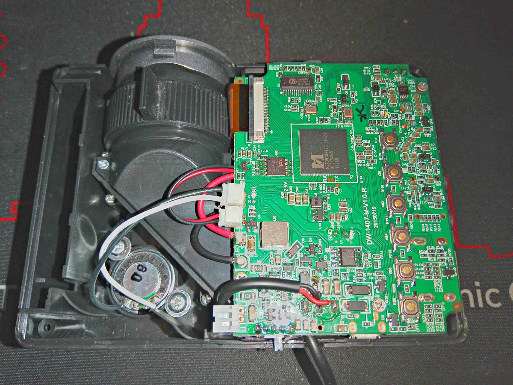
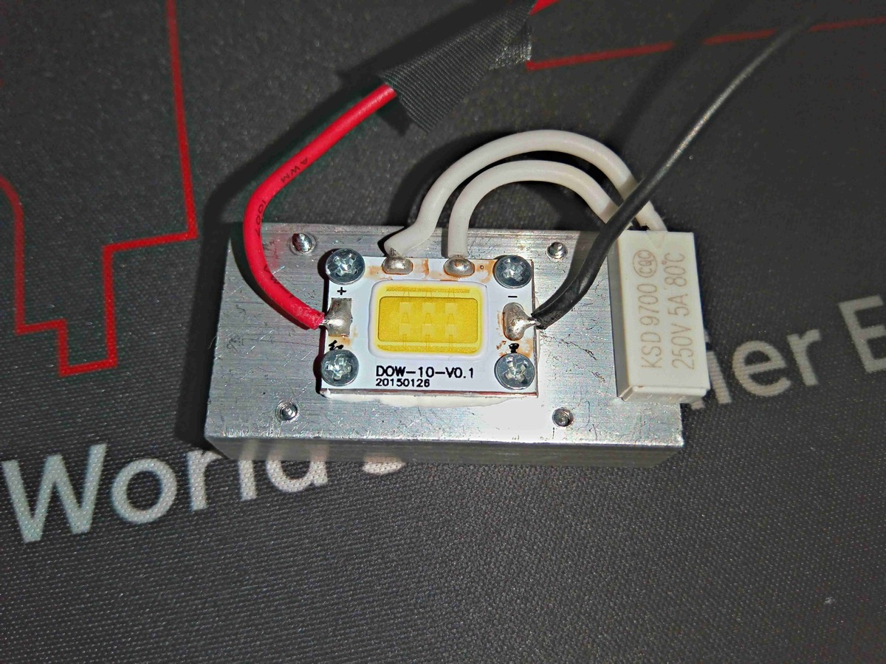
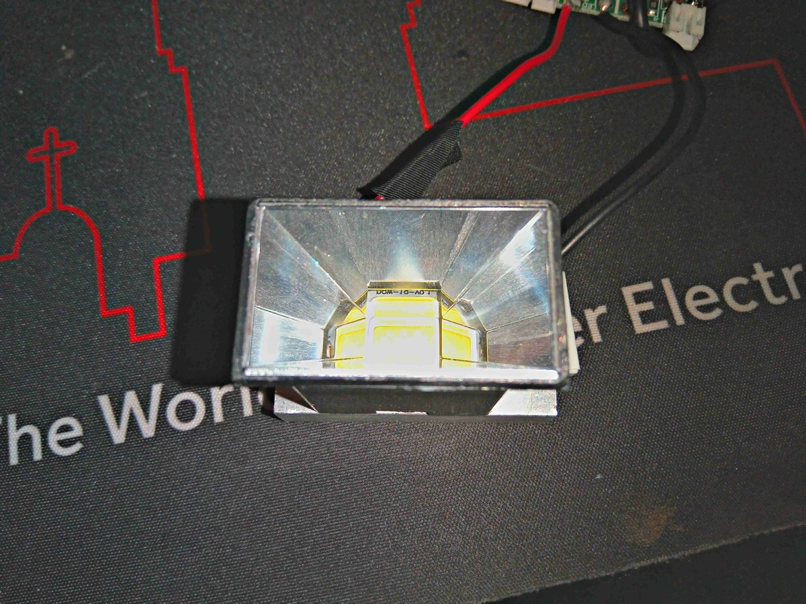
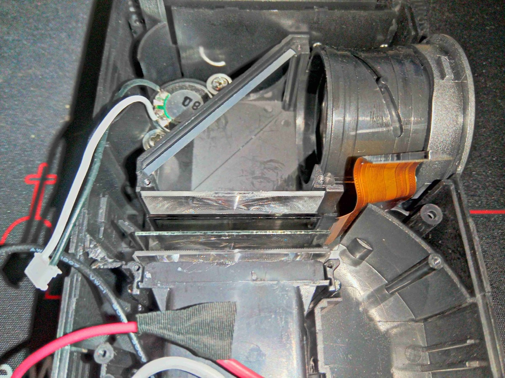
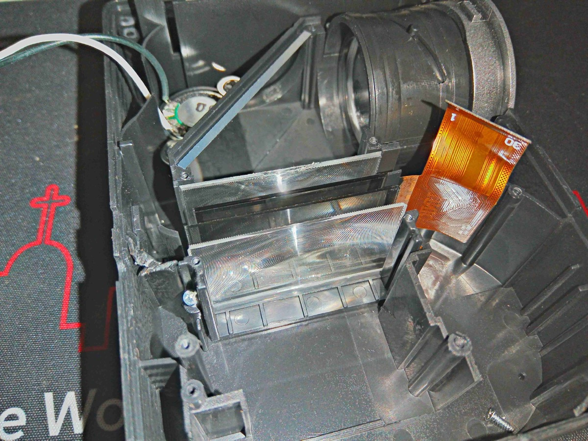
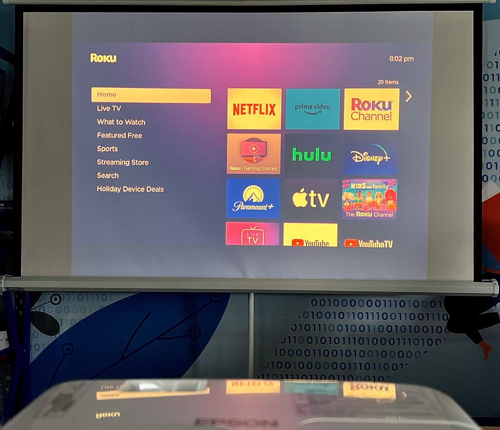
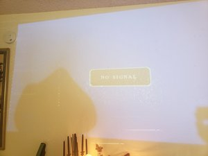
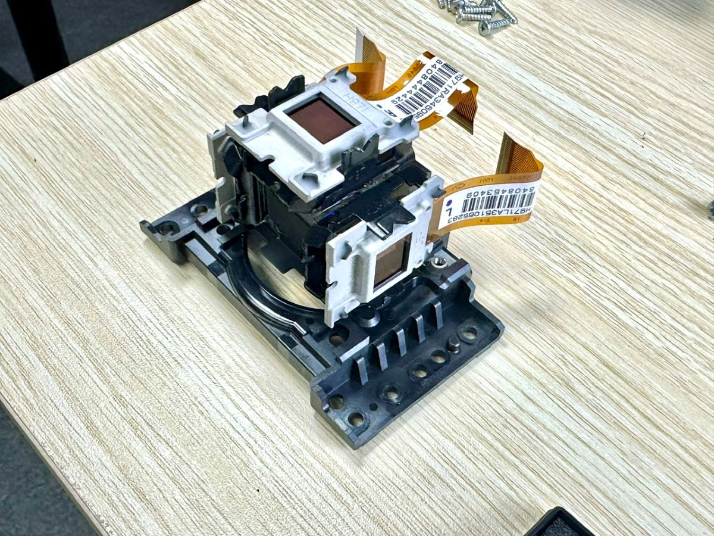
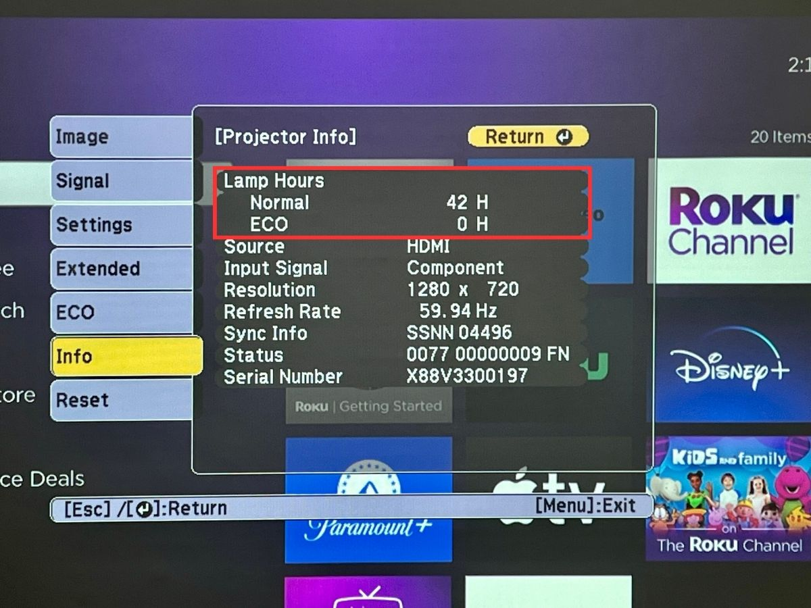
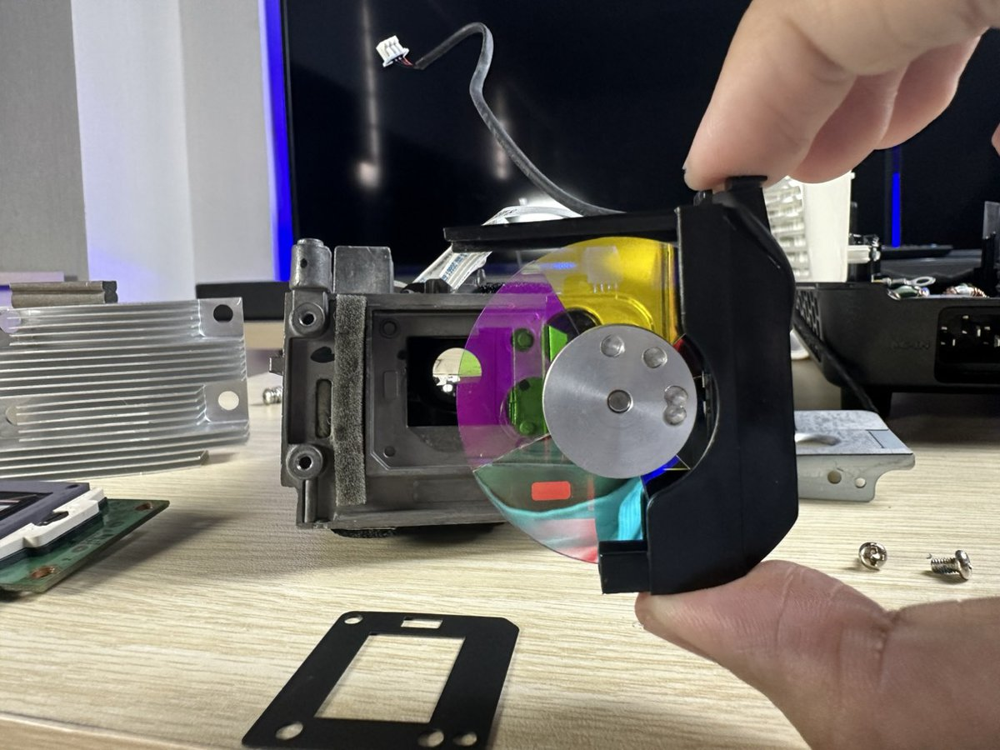

- The 20,000-Hour Promise
- What LED Lamp Hours Actually Mean
- How LED Lifetime Is Actually Measured
- The Real Problem: The Projector Ages Faster Than the LED
- The Weak Link: LCD Panel Aging
- Real-World LCD Aging Timeline
- Why Manufacturers Advertise LED Hours Instead of LCD Lifetime
- What Users Should Actually Look For
- What Comes Next
- Sources
Every projector spec sheet has a number that makes the product sound nearly indestructible: "LED lamp life: 20,000 hours." At four hours of daily viewing, that implies the projector will last nearly 14 years. It sounds reassuring, but it's misleading.
The 20,000-Hour Promise
The LED light source inside a projector rarely determines how long the projector maintains its image quality. In practice, other components inside the optical system degrade much sooner, often at less than half the advertised lamp life.

To understand why, we first need to understand how LED lamp hours are actually calculated.
What LED Lamp Hours Actually Mean
Unlike traditional projector lamps, LEDs almost never fail suddenly.
Instead, they gradually lose brightness over time due to:
- Semiconductor degradation
- Thermal stress
- Material aging inside the diode
Because of this, the LED industry measures lifetime using lumen maintenance.
Lumen maintenance tracks how much brightness remains after a given number of operating hours. The most common metric is L70.
So when a projector advertises "LED life: 20,000 hours", what it usually means is:
After 20,000 hours of operation (~833 days of non-stop use, or roughly 13 years at 4 hours a day), the LED will still function but will produce approximately 70% of its original brightness.
The LED does not stop working. It simply becomes gradually dimmer.


How LED Lifetime Is Actually Measured
LED lifetime claims are based on standardized engineering procedures defined by the Illuminating Engineering Society (IES) [1] [2].
The process consists of three major steps:
- LM-80 testing (real long-term measurements)
- TM-21 projection (statistical lifetime modeling)
- L70 lifetime estimation
These methods are widely used across LED lighting, automotive lighting, architectural lighting, and display technologies.
Step 1: LM-80 Testing (Real Long-Term Measurements)
LM-80 is a standardized procedure used to measure lumen maintenance of LED components over time [1].
During LM-80 testing:
- Multiple LED samples are operated continuously
- Brightness measurements are taken periodically
- LEDs are tested at multiple temperatures (typically 55 °C, 85 °C, and a manufacturer-defined high temperature)
Measurements are taken over 6,000–10,000 hours or longer.
Example LM-80 measurement data:
| Operating Hours | Lumen Output |
|---|---|
| 0 | 100% |
| 1,000 | 99% |
| 3,000 | 97% |
| 6,000 | 94% |
| 10,000 | 91% |
This produces a lumen maintenance curve. But LM-80 testing does not produce a final lifetime number. It only gives you the raw degradation data.
Step 2: TM-21 Projection (Statistical Lifetime Modeling)
Running tests for decades isn't practical, so engineers use TM-21 projection models to estimate long-term performance [2].
TM-21 fits an exponential decay model to the LM-80 data:
Where:
L(t) = brightness at time t
L0 = initial brightness
α = degradation constant
t = operating time
The L70 lifetime: tL70 = ln(0.7) / (−α)
The TM-21 Six-Times Rule
To prevent unrealistic claims, the IES limits projection distance:
| LM-80 Test Duration | Maximum Lifetime Claim |
|---|---|
| 6,000 hours | 36,000 hours |
| 10,000 hours | 60,000 hours |
Visualizing the Degradation Curve
This slow fade is exactly why LEDs tend to outlast the rest of the projector.
The Real Problem: The Projector Ages Faster Than the LED
The LED light source may last 20,000 hours (~13 years at 4 hours daily), but the projector itself often starts showing image degradation much earlier.
Light inside a projector passes through several components:
- Polarizers
- LCD imaging panels
- Color filters
- Optical coatings
- Lenses
All of these sit in intense light and heat, which speeds up aging.


The Weak Link: LCD Panel Aging
In LCD-based projectors, the LCD panel acts as a light valve that controls how light forms the image.
The panel sits directly in the high-intensity optical path, exposing it to:
- Continuous illumination
- Thermal stress
- UV radiation
Over time, several things go wrong.
Polarizer Degradation
LCD panels rely on polarizer films to control light polarization. These films are organic polymer materials that degrade under heat and strong illumination.
Yellow Tinting
The most common symptom is a yellow or brown tint across the image. This happens because blue polarizers degrade faster, letting less blue light through.

Symptoms include:
- Yellowish whites
- Warm grey tones
- Inaccurate color reproduction
Yellow Spots or Blotches
Sometimes the damage shows up in specific areas, usually where the polarizer runs hottest.


Symptoms:
- Yellow patches in the image
- Blotches visible on white screens
- Localized discoloration
Contrast Loss and Washed-Out Images
As polarizers and liquid crystal materials age, the panel loses its ability to block light properly. Symptoms:
- Grey blacks
- Washed-out contrast
- Faded colors
Liquid Crystal and Color Filter Degradation
Beyond the polarizers, the liquid crystal molecules themselves gradually lose alignment from thermal stress [3], causing reduced contrast, uneven brightness, and slower pixel response. Many LCD panels also have RGB color filters that fade under strong illumination, leading to color shift, reduced saturation, and uneven reproduction across the image.
Real-World LCD Aging Timeline
In practice, visible aging can begin after several thousand hours.


| Component | Typical Lifetime |
|---|---|
| LED light source | ~20,000 hours (~13 years at 4 hrs/day) |
| LCD optical system | ~7,000–8,000 hours (~5–5.5 years at 4 hrs/day) |
Industry Example: Optical Block Failures
In the 2000s, several LCD rear-projection TVs suffered optical block degradation: yellow images, green tinting, and uniformity issues. The root cause was polarizer heat damage [3].
LED vs LCD Aging Comparison
| Component | Typical Behavior | Typical Lifetime |
|---|---|---|
| LED light source | Gradual brightness reduction | ~20,000 hours (~13 years) |
| LCD panel & polarizers | Thermal degradation | ~7,000–8,000 hours (~5–5.5 years) |
| Optical coatings | Thermal aging | Varies |
Why Manufacturers Advertise LED Hours Instead of LCD Lifetime
Human Psychology
Consumers associate bigger numbers with durability. "20,000 hour LED life" (~13 years) sounds reassuring. "7,000 hour LCD optical life" (~5 years) would scare buyers away.
Standardization
LED lifetime has standardized metrics: LM-80 and TM-21. LCD optical aging depends on too many variables (heat, optical intensity, materials, cooling design), so manufacturers rarely publish LCD lifetime numbers.
What Users Should Actually Look For
When shopping for a projector, keep this in mind:
While LEDs may last 20,000 hours (~13 years at 4 hours daily), the LCD optical system may degrade much earlier.
Practical questions to ask before buying:
- What projection technology does it use? LCD, DLP, and LCoS have different aging profiles.
- How is the optical system cooled? Better thermal design extends the life of polarizers and LCD panels.
- Is the optical path sealed? Sealed light engines reduce dust contamination, a secondary cause of degradation.
- What is the warranty coverage? A projector with a 20,000-hour LED claim but only a 1-year warranty tells its own story.
What Comes Next
If the LCD panel is the weak link, what happens when you remove it from the optical path entirely?
In the next article, I'll look at a projection technology that does exactly that: no LCD panels, no polarizers, no color filters in the light path. It changes the longevity equation completely.
Projector teardown photographs: Experimental Engineering
Projector yellowing, LCD panels, lamp hours, and color wheel photographs: PointerClicker
Yellow spot photograph: iFixit Community
Sources
- IES LM-80 Standard — Measuring Luminous Flux and Color Maintenance of Solid-State Light Sources. IES
- IES TM-21 — Projecting Long-Term Lumen, Photon, and Radiant Flux Maintenance of LED Light Sources. IES
- "Analysis of LCD Aging with Polarized Optical Texture and Transmission Spectrum." ResearchGate
- "Dust: The Killer of Projectors — Part II: LCD." Projector Junkies. Link
- "DLP vs LCD Technology." PDF